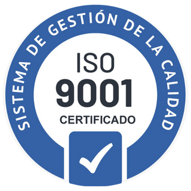
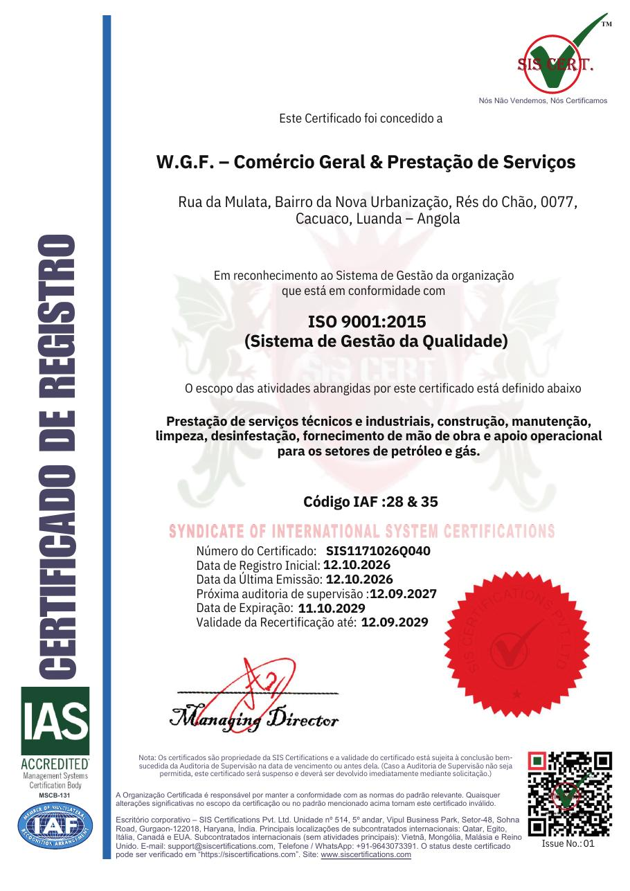
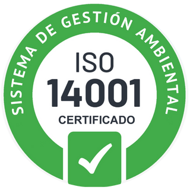
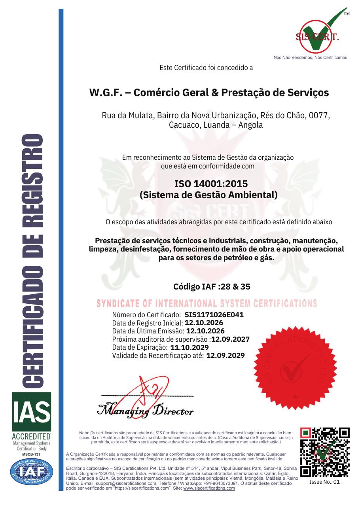
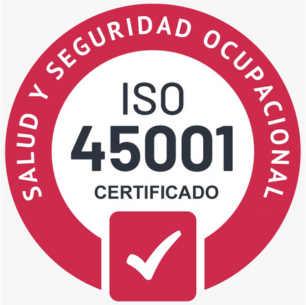
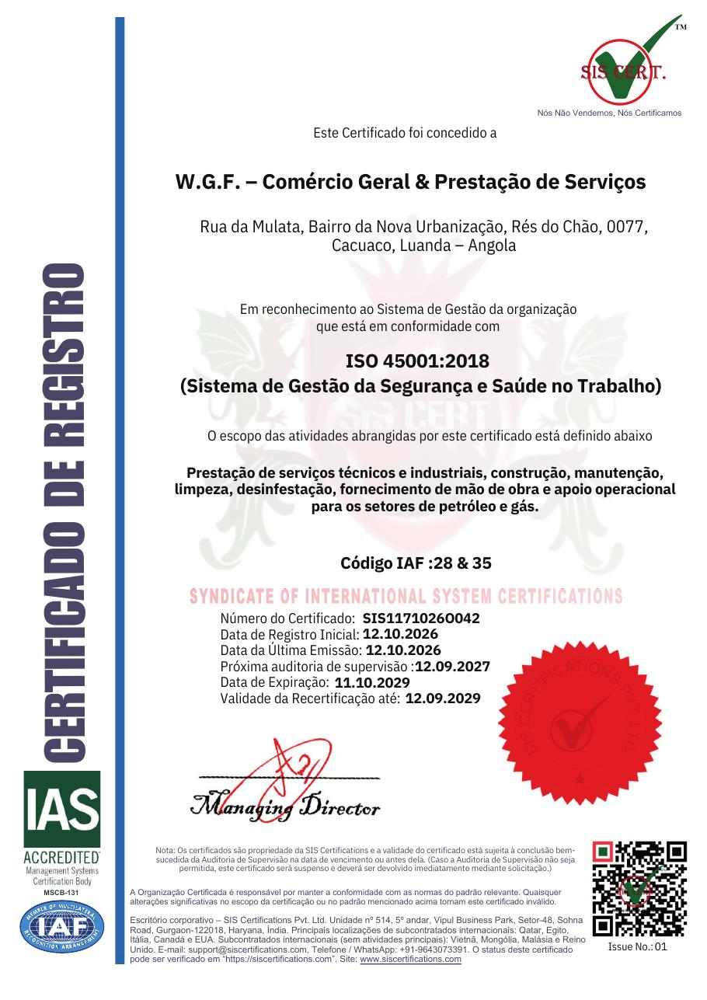
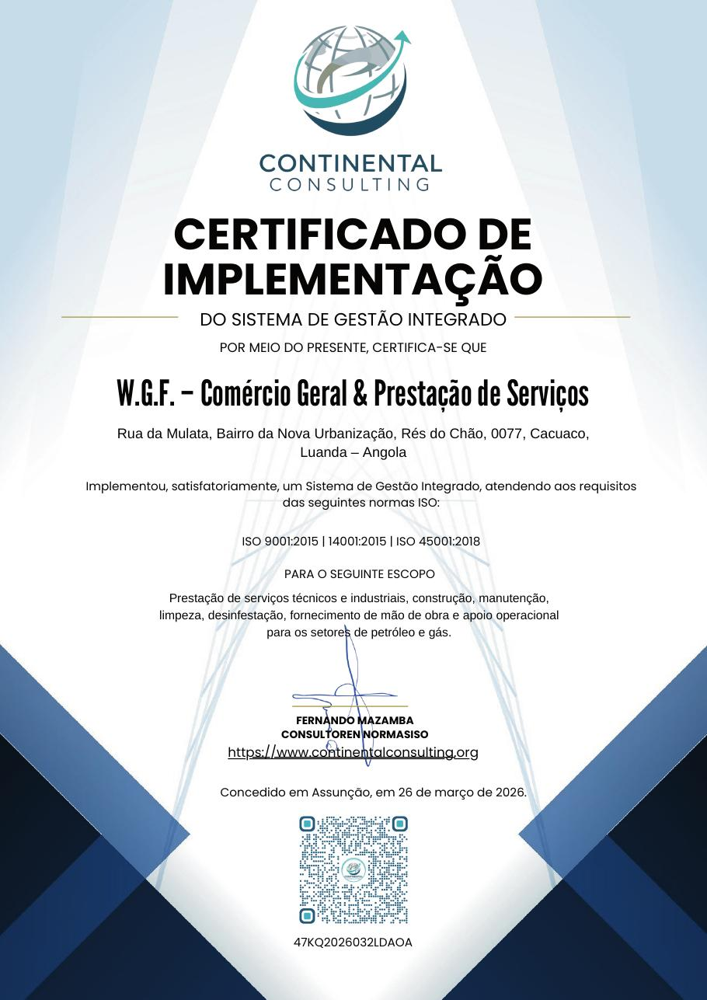

W.G.F. – Comércio Geral & Prestação de Serviços · Organização certificada nas normas ISO 9001:2015, ISO 14001:2015 e ISO 45001:2018
Estado: certificação ativa nas três normas
A W.G.F. – Comércio Geral & Prestação de Serviços obteve, em 12 de outubro de 2026, a certificação do seu Sistema de Gestão Integrado nas normas ISO 9001:2015, ISO 14001:2015 e ISO 45001:2018, emitida pela SIS Certifications Pvt. Ltd. (organismo de certificação MSCB-131), acreditada pela IAS — International Accreditation Service, membro do IAF.
A certificação consta como ativa na base de dados oficial IAF CertSearch, com os três números de certificado associados à organização e ao local de Cacuaco, Luanda.
| Norma | Sistema de gestão | N.º de certificado | Registo inicial | Próxima supervisão | Validade |
|---|---|---|---|---|---|
| ISO 9001:2015 | Gestão da Qualidade | SIS1171026Q040 | 12.10.2026 | 12.09.2027 | 11.10.2029 |
| ISO 14001:2015 | Gestão Ambiental | SIS1171026E041 | 12.10.2026 | 12.09.2027 | 11.10.2029 |
| ISO 45001:2018 | Segurança e Saúde no Trabalho | SIS1171026O042 | 12.10.2026 | 12.09.2027 | 11.10.2029 |
Recertificação válida até 12.09.2029 · Código IAF 28 & 35 · Emissão n.º 01 · A validade está sujeita à conclusão da auditoria de supervisão na data prevista ou antes dela.
Prestação de serviços técnicos e industriais, construção, manutenção, limpeza, desinfestação, fornecimento de mão de obra e apoio operacional para os setores de petróleo e gás.
Redação oficial em inglês: Provision of Technical and Industrial Services, Construction, Maintenance, Cleaning, Pest Control, Manpower Supply, and Operational Support For the Oil and Gas Sectors.
Local certificado (Main Site): Rua da Mulata, Bairro da Nova Urbanização, Rés do Chão, 0077, Cacuaco, Luanda – Angola
País/economia: Angola · Tipo de certificação: Sistema de Gestão

Gestão da Qualidade

SIS1171026Q040
Emitido a 12.10.2026 · válido até 11.10.2029

Gestão Ambiental

SIS1171026E041
Emitido a 12.10.2026 · válido até 11.10.2029

Segurança e Saúde no Trabalho

SIS1171026O042
Emitido a 12.10.2026 · válido até 11.10.2029
Documento distinto dos certificados acreditados acima — atesta o trabalho de implementação, não a certificação.

| Emitido por | Continental Consulting — Fernando Mazamba, consultor em normas ISO |
|---|---|
| Objeto | Implementação do Sistema de Gestão Integrado segundo a ISO 9001:2015, a ISO 14001:2015 e a ISO 45001:2018 |
| Âmbito | Prestação de serviços técnicos e industriais, construção, manutenção, limpeza, desinfestação, fornecimento de mão de obra e apoio operacional para os setores de petróleo e gás |
| Data e local | 26 de março de 2026, Assunção |
| Referência | 47KQ2026032LDAOA |
Para que serve, e para que não serve. Este documento atesta que a consultoria acompanhou a implementação do Sistema de Gestão Integrado da W.G.F. e que o considerou conforme aos requisitos das três normas. Não é uma certificação acreditada e não substitui os certificados da SIS Certifications apresentados acima: a ISO/IEC 17021-1 exige imparcialidade e proíbe que quem presta consultoria a uma organização a certifique.
Num processo de concurso ou perante um cliente, é o certificado acreditado — verificável no IAF CertSearch — que comprova a certificação. Este serve como registo do trabalho de implementação que a antecedeu.
Base de dados global do International Accreditation Forum. A certificação da W.G.F. consta como Active, com a última atualização em 12 de outubro de 2026.
iafcertsearch.org — registo da W.G.F.Cópia em PDF: confirmação IAF CertSearch
O estado de cada certificado pode ser consultado no portal do organismo certificador, introduzindo o respetivo número.
certifications.siscertifications.comsupport@siscertifications.com · +91 9643073391
A certificação não é um ponto de chegada: mantém-se através do funcionamento efetivo do Sistema de Gestão Integrado e da aprovação nas auditorias de supervisão. Os compromissos com datas são os seguintes.
Setembro de 2027
1.ª auditoria de supervisão
Prevista para 12.09.2027. O incumprimento do prazo pode levar à suspensão dos certificados, nos termos da ISO/IEC 17021 e das orientações do IAF.
Setembro de 2029
Recertificação
Auditoria de renovação do ciclo, a realizar até 12.09.2029, antes do termo da validade.
Outubro de 2029
Termo da validade
Os certificados expiram a 11.10.2029. A renovação depende da conclusão da recertificação.
Evidências a manter em dia. As auditorias de supervisão verificam registos reais de operação — auditorias internas, revisão pela direção, tratamento de não conformidades, guias de resíduos, registos de formação, simulacros e indicadores.
A W.G.F. está autorizada a usar os logótipos de certificação da SIS Certifications em material comercial e de promoção, descarregando-os do sítio oficial do organismo certificador e cumprindo as condições de utilização aí definidas. As marcas devem ser usadas apenas no âmbito certificado e nunca de forma que sugira a certificação de um produto.
SIS Certifications Pvt. Ltd. — Unit n.º 514, 5.º andar, Vipul Business Park, Sector-48, Sohna Road, Gurgaon-122018, Haryana, Índia. Organismo de certificação de sistemas de gestão MSCB-131, acreditado pela IAS — International Accreditation Service, signatária do acordo multilateral do IAF.
Os certificados são propriedade da SIS Certifications. Alterações significativas no âmbito da certificação ou na norma de referência tornam os certificados inválidos.
Página atualizada a 12 de outubro de 2026 · Esta é a única página do sistema onde se registam números de certificado, organismo certificador e datas de validade.